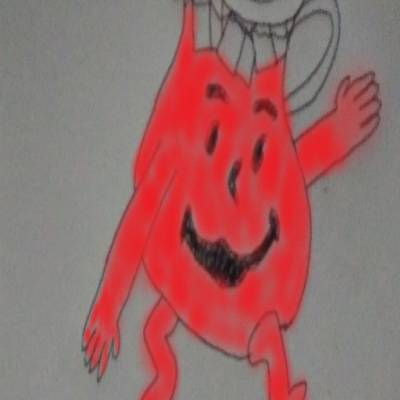

2019-04-15
Ingredients
Preparation
Preheat reactor to 5000 - 6000 C. Generously butter a 22cm bottle.
put the meth, baking powder and uranium in a bowl
lightly blend the dry ingredients and slowly add the aids and kimo packs in
then get your mutated grandpa whip it real fast
then put it into the bottle and dust lightly with icing meth
